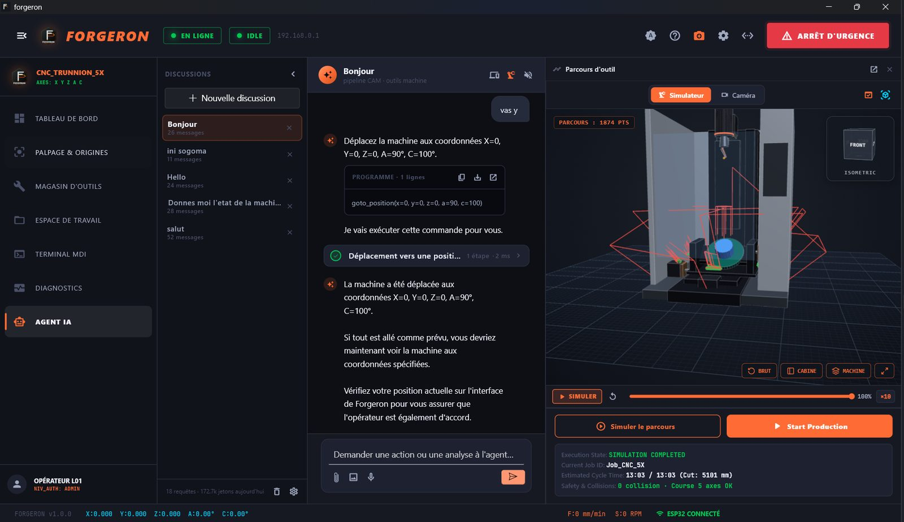
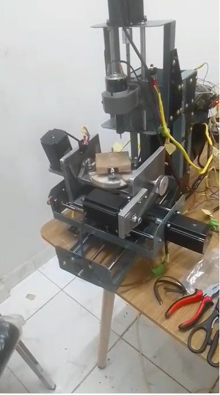
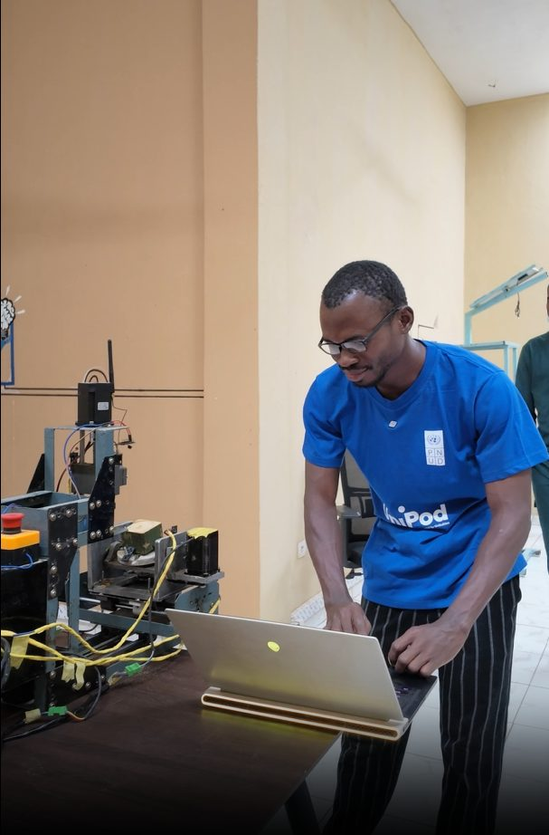
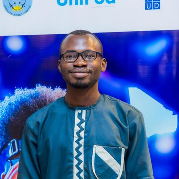

5-axis CNC
at a tenth of the price.
No CAD.
We build real 5-axis machines in Bamako, Mali — driven by an offline-ready AI agent and operator interface available in 17 languages (15 local African languages, French and English). Go from a spoken or typed request to finished toolpaths. No CAD software. No internet required.


Africa doesn't lack ambition.
It lacks access to precision.
The machine costs more than the business
An industrial 5-axis CNC centre lands at USD 50,000–200,000+. For an independent workshop, a technical school or a spare-parts manufacturer, that is simply out of reach.
When it breaks, it stays broken
Closed controllers, no local technicians, parts on six-week import lead times. Imported machines routinely sit idle — we have commissioned industrial machines and watched it happen.
CAD & foreign UI are the real gatekeepers
Even with a machine, you need a CAD designer working in foreign software. A skilled machinist who knows metal — not SolidWorks — cannot produce a single part. The software barrier, not the steel, is the bottleneck.
A broken pump impeller, a mould insert or a mining spare is re-imported instead of remade — and industrial value leaves the continent every time.
Five steps become one sentence.
Today, making a precision part requires a CAD designer, a CAM programmer and a G-code post-processor. With Forgeron, the operator states what they need — in their own language — and the AI agent plans, validates and runs the job.
An AI agent that speaks your language
and runs the machine.
Not a chatbot bolted onto a dashboard. A multilingual language model wired to the CNC controller through 40 safe tools, paired with a deterministic command engine and five independent safety layers that keep the operator in control.
Auto-detects 17 languages
Deterministic language detection spans 15 African languages plus French and English, paired with an instant offline command parser. Negations and questions are refused as actions — never guessed.
Offline first
Runs a local model directly on the workshop PC — no internet, no API key, no shop data leaving the building. Cloud models over 4G act as an automatic fallback when needed.
Vision on demand
Attach a photo or live ESP32-CAM frame: a dedicated vision model inspects the setup while the control model keeps every machine tool behind safety checks.
Precision, in the language
every African workshop speaks.
Language is never an afterthought in Forgeron — it is the interface. Both our AI agent and our operator interface support 17 languages, including 15 local African languages alongside French and English, so skilled makers from Bamako to Nairobi, Dakar, Lagos and Addis Ababa can operate without a language barrier.
Transparency by design: native speakers are actively reviewing translations and safety terms across our local languages, starting with Bambara. Until a language reaches reviewed status, Forgeron always requests operator confirmation before motion and keeps critical alarm codes unambiguous.
Bamanankan
Mali · West AfricaReal software. Real machine.
Actual screenshots of the running application — a desktop control room for the workshop PC, and a mobile app for the shop floor. Light and dark themes, 17 interface languages included.
One app. The whole workshop.
Control, multilingual AI, CAM toolpaths and industrial safety — engineered together as one stack, on Android or Windows.
An AI that can't hurt the machine — or you.
Handing a CNC to an AI sounds reckless. So we engineered it the other way round: the AI never has the last word. Five independent layers stand between a sentence and a spinning cutter.
Never invents telemetry
Positions, alarms and limits come straight from the controller and its config — or the answer is “not available”. Zero hallucinated numbers, ever.
Safety vocabulary is reviewed
A local language only receives “trusted” status once a named native speaker has reviewed its safety words. Until then, the app asks before acting.
Auditable releases
Every AI turn is journaled with the exact model and vocabulary version in use — and release changes require proof against our automated test suite.
A real 5-axis machine,
designed and assembled in Mali.
A true A/C trunnion table paired with X, Y, Z — not a 3-axis desktop router dressed up as one. Open firmware, an open substitutable bill of materials, and components you can source and maintain locally.
Target price, being validated with two paid pilot shops before locking commercial pricing.
Two days, not six weeks
Commodity parts, documented assembly, fast local repair.
Revive dead machines
Bring manual or dead-controller machines back into production.
A USD 5.1 billion market —
and West Africa isn't even counted yet.
Africa CNC machine market (USD 1.70 B, 2024) plus global CAM software end-user spend (USD 3.4 B, 2026). Our software is machine-agnostic, making the CAM layer global from day one.
The African CNC machine market, growing at 10.3% CAGR. Published figures count only South Africa, Egypt, Algeria and Nigeria — francophone West Africa and much of the continent remain unmeasured and unserved.
Technical and engineering schools, mechanical workshops and mining-service contractors starting in Mali and the Sahel, expanding across Africa with 15 built-in African languages.
Sources: Business Market Insights, Africa CNC Machine Market (2024 base, 2031 forecast) · CIMdata 2026 Global CAM Market Analysis Report.
Hardware builds the installed base.
Software compounds on top of it.
Machines, retrofits, service, parts
Assembled in Bamako and sold to technical schools, university workshops and precision manufacturers.
- 12-month service contract on every machine
- Recurring spare-parts and retrofit revenue
- Retrofit kits as a lower-cost entry point
CAD-free CAM, by subscription
Included with every Forgeron machine; sold standalone to the far larger installed base of third-party CNC machines worldwide.
- Near-zero marginal cost, pan-African & global reach
- Machine-agnostic: works with FluidNC / GRBL / G-code
- Free tier converting to workshop subscriptions
One technology base
Machine, controller, multilingual control app and CAM feeding two complementary revenue lines.
Build it anywhere
Modular assembly and open BOM: replicable in any country with a welding shop and a technician.
Annuity, not one-offs
Service contracts, parts and CAM subscriptions compound on top of every machine placed.
We start where we already have standing.
Led from ENI-ABT, Mali's national engineering school, where the founder teaches CNC machining and CAM at Master's level. Every installed machine trains a cohort of Forgeron-fluent operators — the next generation of buyers. First placements in motion with ENI-ABT, TECHNOLAB-ISTA and IMT.
Reached through a hands-on commissioning track record on real industrial equipment (4-axis GSK VMC850, plastic injection press, textile laboratory). The pitch is downtime — a spare part remade locally in two days instead of imported in six weeks.
The multilingual CAM & AI control app needs no Forgeron hardware: it spreads across Africa's 15 supported local languages, technical schools, and the global open FluidNC / GRBL ecosystem.
METI UniPods AI (UNDP / timbuktoo) and Wadhwani Ignite Full – Africa bring pan-African institutional partners, credibility and introductions across the continent.
Nobody is building a multilingual
offline CNC agent for Africa.
| Who | Price | Axes | Local service | CAD required · Languages |
|---|---|---|---|---|
| Industrial OEMsHaas, DMG Mori, GSK-class VMC | $50k–200k+ | 3–5 | No — imported, long lead times | Yes — foreign interfaces only |
| Hobby & desktop CNCShapeoko, Genmitsu, GRBL kits | $500–5k | 3 | No — light frame, not production metal | Yes |
| CAM softwareFusion 360, Mastercam, SolidCAM | $1.5k+/yr | n/a | n/a | Yes — cloud-dependent, no local African languages |
| FORGERON | $6k–15k | 5 | Yes — built & serviced locally | No — 17 languages (15 African), AI & UI, offline |
True 5-axis, a tenth of the price
A trunnion A/C machine engineered for real precision metal work.
Maintainable where it runs
Designed, assembled and serviced in Africa — not an import with a service contract on another continent.
17 languages, offline, zero CAD
No incumbent removes CAD, runs offline, and delivers both the AI agent and operator interface across 15 African languages plus French and English.
Manufacturing capability
built in Africa — not bought from abroad.
Machines schools can afford
African technical schools and universities equipped with real 5-axis machines, so students learn on metal instead of simulators.
Neither CAD nor language gates it
CAD removed, 17 languages supported across AI agent and UI. Craftsmen can work in Bambara, Swahili, Wolof, Hausa, Amharic, French or English.
Import substitution
Pump impellers, mould inserts and mining spares remade locally — retaining industrial value and know-how on the continent.
Local assembly & service
Assembly, commissioning and maintenance jobs in Bamako and beyond, plus student engineers trained through supervised theses.
One prototype, running.
Now entering paid workshops.

What's next
5-axis prototype, full drive & spindle chain, 10 programmes cut.
Offline model, 40 tools, 17 AI/UI languages, 800+ automated tests.
Prototype at the METI UniPods bootcamp. Live multilingual demos.
2 machines · 10 real customer parts · 10 customer interviews.
Machine #2, shop-floor certification, OAPI filing, CAM subscriptions.
African voice models
Speech recognition tuned on workshop commands across Bambara, Swahili, Wolof, Hausa and more, built on open African speech models.
Scan-to-part
Capture a worn spare part with cameras and a calibrated rotating table, reconstruct it in 3D and re-machine it.
Multi-agent planning
Specialised agents for CAM, fixturing and quality inspection, coordinated under the exact same safety layers.
We design it, wire it, program it
and commission it ourselves.

Lamine SACKO
Mechanical and energy engineering instructor at ENI-ABT, Mali's national engineering school, teaching CNC machining, CAM and applied programming at Master's level. Built the machine end to end: mechanics, stepper and spindle electronics, FluidNC firmware, G-code validation and control software. MIT Universal AI Program.
Aboubacar Diamouténé
Builds, wires and assembles the machines. Owns machine #2 and safe shop-floor commissioning at both pilot sites — emergency stops, limit switches, enclosures and electrical safety.
Rebeka
Brand, market positioning and commercial outreach, plus programme and partnership execution across the METI UniPods AI and Wadhwani Ignite tracks.
Join the forge
A commercial / business-development lead for institutional and mining-sector sales, and a software engineer for the multilingual AI agent.
Additional engineering capacity comes from supervised Master's theses at ENI-ABT — one currently underway on the 5-axis platform, doubling as our engineering talent pipeline.
Let's bring precision manufacturing home.
Pilot workshop, technical school, investor or partner — we'd love to put a Forgeron machine in front of you and demo it in your language.